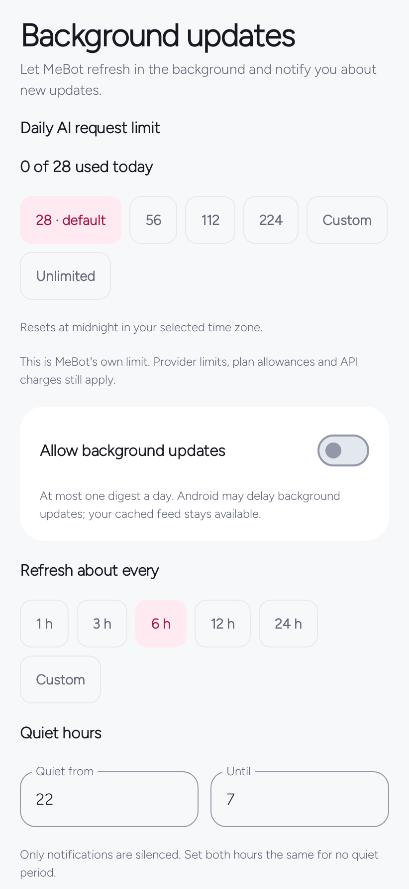

Manage the app
Background & your data
Control how often the app works, how many AI attempts it may make, and which data you want to keep or export.
In the appYou → Background updates · Data and backups
On this page
Set your daily AI limit
Choose 28, 56, 112, 224, a custom positive whole number, or Unlimited. New profiles start at 28; an existing saved choice survives an update. Select Save to apply changes.
The counter resets at midnight in your configured timezone, or the device timezone when none is set. You can change this allowance even when background delivery is off.
Unlimited removes MeBot’s local cap only.
ChatGPT plan allowances, workspace controls, rate limits, API billing, and a personal service’s independent cap still apply. Use the provider’s own usage and spending controls too.


What counts as a request
| Operation | Local AI allowance |
|---|---|
| AI module discovery | One attempt per upstream module request. A refresh across several AI modules may use several attempts. |
| Story explanation, search, or conversation turn | One attempt for each provider request. |
| Connection or model check | A small real inference attempt, counted too. |
| Failed or cancelled provider attempt | Remains counted because the upstream outcome can be uncertain. |
| Cached paging, changing filters, local tools, public-source retrieval | No AI attempt. |
| Reusing a current matching completed explanation | No new AI attempt. |
Unlimited still records usage. It is not a monetary spending guarantee. A personal service also has its own UTC-day cap, defaulting to 48 attempts, independent of the app’s local-day allowance.
Background timing and quiet hours
Allow background updates is off by default. When enabled, choose Refresh about every 1, 3, 6, 12, or 24 hours. Custom accepts a whole number from 1 to 24.
Quiet hours accepts start/end hours from 0 to 23; equal hours disable the quiet period. Quiet hours suppress notifications, not all retrieval or AI usage. Eligible updates can be delivered later, with at most one feed digest per configured local day.
Android may defer scheduled work, so this is not an exact-time news alert. Notification permission, per-module alerts, new content, and connectivity also matter. There is no Wi-Fi-only control in this release.
Turning background updates off cancels periodic feed work; opening or manually refreshing Feed can still retrieve content. Alarm timing uses a separate local scheduler. An actionable plan limit can pause automatic AI while public sources continue; you may deliberately retry after resolving the limit.
Offline use and bounded storage
Cached feed text, saved stories, completed explanations, conversations, and local tools remain readable offline. New AI answers, live search, forecasts, and uncached source pages or images require connectivity. A failed refresh keeps available old content.
Normal refresh keeps saved items plus up to 250 recent unsaved stories, with up to 500 saved IDs. Reading history keeps up to 1,000 opened timestamps. The completed-explanation cache holds up to 24 matching answers, and image caching is bounded. These are useful reading caches, not an unlimited document archive.
Conversation limits are 24 threads, 60 turns each, and 800,000 combined text characters. Delete or export old material you need to manage. Text state is written atomically; a storage error should be resolved before assuming a change was saved.
Choose the right export or restore
| Path | What it contains and replaces |
|---|---|
| You → My context | Profile and approved notes, optionally modules. Import replaces those fields; modules: [] keeps your module choices. AI connection, saved reading, and local tools remain. |
| You → Data and backups → Export feed backup / Import feed backup | Feed profile/context, modules/order, cached and saved stories, explanations, conversations/attachments, and reading history. Restore replaces that feed state, clears local AI credentials, and turns background delivery off. Reconnect afterward. |
| You → Preferences → Export a backup / Import a backup | Local-tool profile/settings, check-ins, focus history, and alarms. Restore replaces local-tool data, disables imported alarms, and clears an active focus interval. Review alarms before enabling. |
Full feed and local-tool backups each use schema version 1 and accept files up to 8 MiB. Context has its own smaller format and bounds. Select the matching import path; the formats are not interchangeable. Imports validate before replacement, with a review or confirmation appropriate to that flow.
Exports are readable JSON, not encrypted vaults. Credentials are excluded, but notes, conversations, attachments, and alarm checkpoint values may be personal. Selected alarm audio bytes and Android file grants are not exported; reselect a custom file on a new device.
Choose a destination you control. A cloud document provider can upload an exported file according to its own settings. Android automatic app backup and device transfer are disabled; there is no built-in cloud sync or remote recovery service.
Erase local data
You → Preferences → Erase data on this device requires confirmation. It clears local repositories, credentials/accounts, scheduled work, and alarms.
It does not remove files you previously exported, selected source audio, provider-side records, or a separately hosted service database. It is not a forensic secure-erasure guarantee. Export what you want to keep before confirming.
For data destinations and credentials, read Privacy & data boundaries.
Written for MeBot 0.6.1. Native screen examples use synthetic host-test fixtures. See the verification record for what was tested and the remaining device/provider checks.